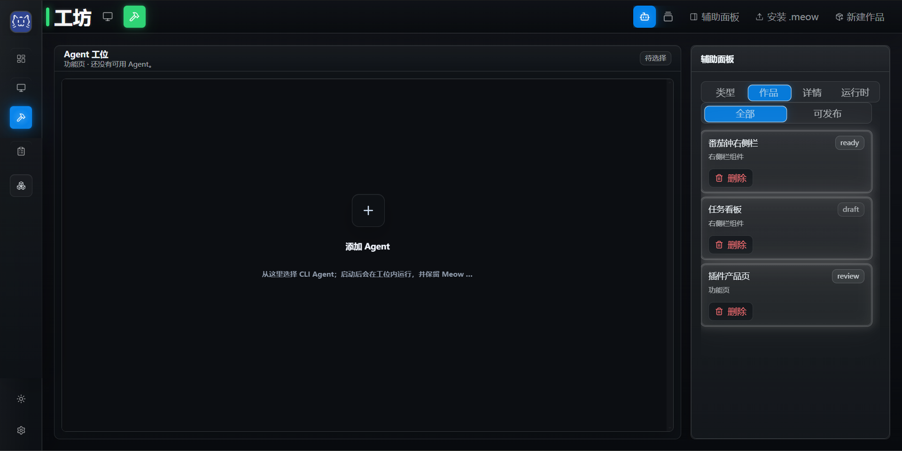

AGENT-DRIVABLE
Agent 能读取、操作并持续扩展工作台。
MEOW FORGE GALAXY / ORBITAL HUB
让多个产品、Agent 与上下文一起工作的集成环境。

WHAT IT IS / 它是什么
Meowdesk 把 Agent、工具、页面、插件与个人工作流放进同一个可扩展空间。它负责创造和运行；Meow Forge 负责筛选、包装、展示和交付。
PRODUCT PRINCIPLES
Meowdesk 的核心不是预设所有功能，而是给普通用户、Agent 用户和 vibe coder 一个能够不断扩展的个人工作空间。
Agent 能读取、操作并持续扩展工作台。
工具、任务和作品在一个真实工作空间中运行。
插件、页面与技能可以按需要安装和生长。
最终长成每个用户自己的工作方式，而不是固定模板。